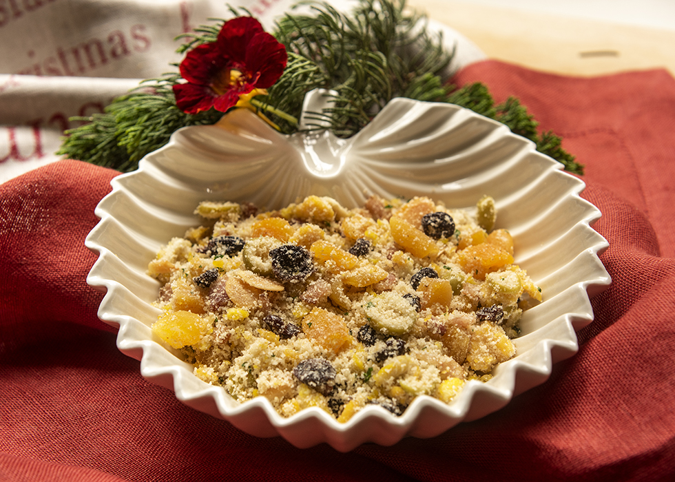

💫 Curiosidades sobre a Farofa

Farofa Tradicional
Feita com farinha de mandioca, ovos e temperos simples, é um acompanhamento clássico que combina com todos os pratos da ceia.

Farofa com Frutas Secas
Adicionando passas, damascos e castanhas, a farofa fica doce e crocante, trazendo sofisticação e aroma à ceia.

Farofa Recheada
Com bacon, linguiça e cebolas caramelizadas, é uma versão mais elaborada e saborosa, perfeita para quem quer impressionar na ceia.